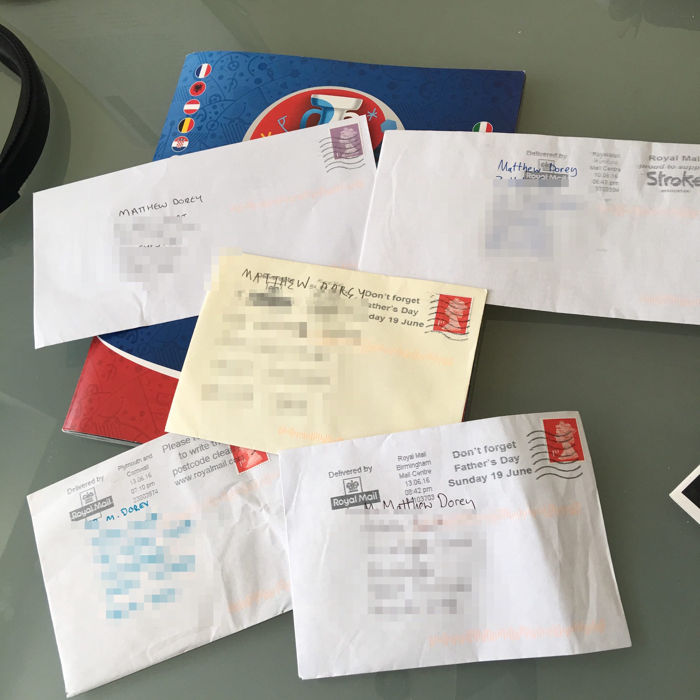

Jun. 14, 2016

Envelopes containing swaps that have arrived in the post in recent days. It is nice to get letters from all over the country, even if they do just contain a selection of panini stickers. As I mentioned in a previous post, I have used the sticker swapping website to share my swaps with people all over the UK. I have sent swaps off to London, Bristol, Cornwall, Lancashire, Wales, and Gloucester. You’ll also be happy to know that I got my hands on an Aleksei Berezutski. Only 52 left to go!